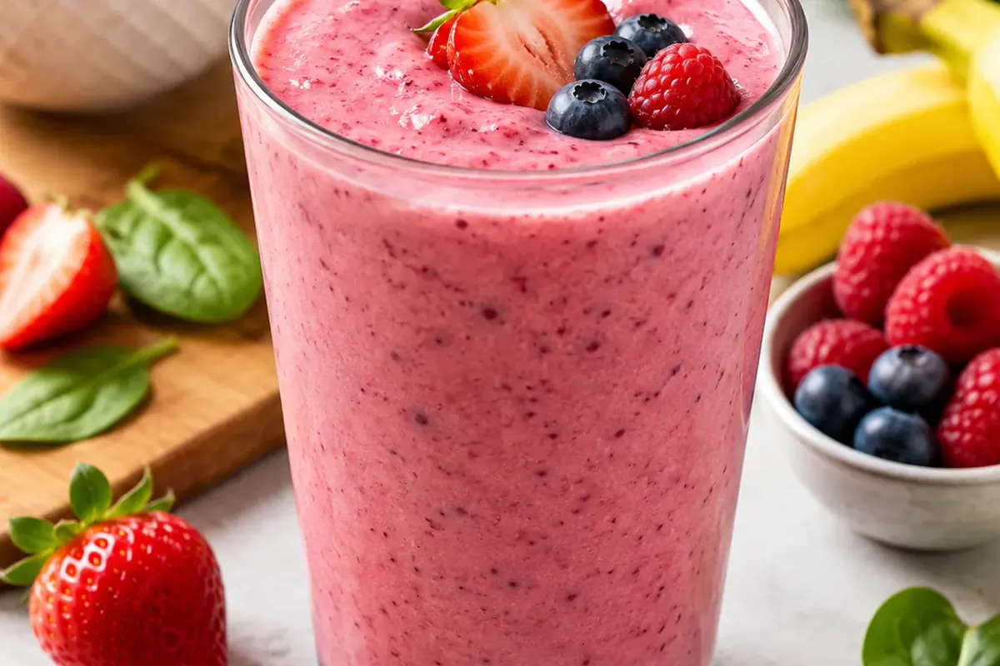

Refreshing Strawberry Smoothie

A good strawberry smoothie is thick enough to hold a straw upright for a moment and cold enough to feel like a treat. Frozen strawberries do most of the work, banana adds body, and Greek yogurt brings a little tang so it does not taste like melted ice cream.
It takes five minutes and makes one large or two small servings. The order the ingredients go into the blender matters more than most people expect.
Ingredients
- 2 cups frozen strawberries
- 1 ripe banana (fresh or frozen)
- 1/2 cup plain or vanilla Greek yogurt
- 1 cup milk (almond, oat, or dairy milk)
- 1 tbsp honey or maple syrup (optional, for sweetness)
- 1/2 cup ice cubes (optional, if using fresh fruit)
Instructions
- Add the liquid (milk) and yogurt to your blender first—this helps the blades blend the frozen fruit easily.
- Add the banana, frozen strawberries, and honey or maple syrup to the blender.
- Secure the lid and blend on high speed for 60-90 seconds until completely smooth and creamy. If the smoothie is too thick, add an extra splash of milk and blend again.
- Pour into a tall glass, garnish with a fresh strawberry slice if desired, and enjoy cold!
Why this recipe works
Putting the milk and yogurt in first gives the blades something to move before the frozen fruit arrives, which prevents the blender from clogging. Frozen strawberries thicken the drink without ice, so the flavour stays concentrated rather than watered down.
Tips for success
- Add the liquid first, then the yogurt, then the fruit.
- Use a banana that is ripe or overripe for sweetness, and freeze it in slices if you want an even thicker smoothie.
- Blend on high for thirty seconds, then check the texture before adding more milk.
Substitutions that work
- Any milk works, including almond, oat and soy. Full-fat dairy gives the creamiest result.
- Swap the honey for maple syrup, or leave it out if the fruit is very ripe.
- Frozen mango, blueberries or raspberries can replace some of the strawberries.
Storage and make-ahead
Best drunk immediately. It can be refrigerated for a few hours in a sealed jar, though it will separate; shake well before drinking. Leftovers can be frozen in a mould for popsicles.
Serving suggestions
Serve it for breakfast with a slice of toast or a bowl of overnight oats, or as a snack after a workout. A spoonful of nut butter turns it into something more substantial.
Texture and temperature
The texture of a smoothie depends more on what goes in the blender than on how long you blend it. Frozen strawberries give thickness without ice, which would water down the flavour. Let the frozen fruit sit at room temperature for two minutes before blending if your blender struggles, and add the milk in two stages so you can stop before it becomes too thin. A high-speed blender will make a smoother drink in twenty seconds than a basic one will in a minute. Serve it in a cold glass, and stir before drinking if it has been standing.
Frequently asked questions
Why is my smoothie too thin?
Too much liquid or not enough frozen fruit. Add more frozen strawberries or a few ice cubes and blend again.
Can I make a smoothie without banana?
Yes. Use an extra half cup of frozen strawberries and a spoonful of yogurt or nut butter to keep the texture creamy.
Can I make it the night before?
You can, but it separates and loses some of its thickness. Blend it fresh, or store the ingredients in a bag in the freezer and blend in the morning.